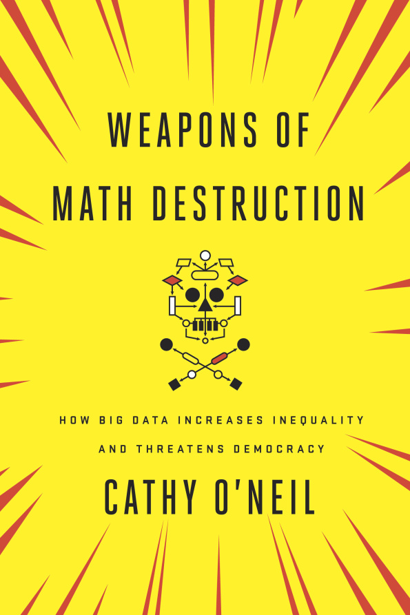

# Mike Williams, Fast Forward Labs - [mike.place/talks/insight](http://mike.place/talks/insight) (hit `p` for presenter notes) - <mike@mike.place> - [@mikepqr](https://twitter.com/mikepqr) ??? I want to give you my background so you can interpret my advice properly. That advice will hopefully be non-obvious, i.e. this is not going to be '10 ways to get a killer job in data science, the sexiest career in America'. But it will definitely be incomplete, i.e. far from a complete list of all the things you could or should do. I work for Fast Forward Labs, which sits at the bridge between commerical world and academic fields like machine learning, computer science and statistics. We investigate things that are commercially relevant, cool and recently possible. Concretely, this means they are more possible today than they were a year or two ago, and we think will be even more important in a couple of years. I think they're useful for you all to be aware of. So I'll give a whistlestop tour of those, but I'm going to spend most of my time talking about neural networks. You've probably heard of them. We're going to get into the details, including how to implement them in keras. --- # Advice about advice - Data science is a young discipline, so - people who've being doing it for long enough to be experienced are unusual in many ways - the people with CVs more like yours don't have much experience -- - What kind of 'data scientist' are you talking to? - A business analytics person - A data engineering person - A software engineer who taught themself statistics - A science PhD who taught themself to code - A quasi-academic with a PhD in machine learning who got hired at NIPS --- # Me - Academia - Undergrad physics 🇬🇧 - PhD astrophysics 🇬🇧 - 2 years at postdoc 1 🇩🇪 - 1 year at postdoc 2 🇺🇸 -- - Left academia summer 2014 🎉 - Not academia - 1 year at Brandwatch as a Data Scientist - At Fast Forward Labs as a Research Engineer since October 2015 --- # Getting a job - Angel List - Salary data - [The O'Reilly Data Science Salary Survey](http://www.oreilly.com/data/free/files/2015-data-science-salary-survey.pdf) - [h1bdata.info](http://h1bdata.info/) and friends ??? I got one job through a personal connection, one job through Angel List. You can get some insight into salaries from the O'Reilly survey and public H-1B data. --- # Interviews - Screening questions - [what's a generator?](http://nedbatchelder.com/text/iter.html) - what are the ways of searching a graph? - "Explain something complicated" - White boards - [10001st prime](https://projecteuler.net/problem=7) - [Lots of unix](http://aadrake.com/command-line-tools-can-be-235x-faster-than-your-hadoop-cluster.html) - Outline an interpolation algorithm - Code up regression model for citibike usage - Take-home: 311 data - Take-home: recommendation engine for github --- # Choosing a job [Advice from Stitchfix](http://multithreaded.stitchfix.com/blog/2015/03/31/advice-for-data-scientists/) > A Data Scientist should look for a company that actually uses data science to > set themselves apart from the competition. When this happens, the company > becomes supportive to data science instead of the other way around. It's > willing to invest in acquiring the top talent, building the necessary > infrastructure, pioneering the latest algorithmic and computational techniques, > and building incredible engineering products to manifest the data science. -- > "Good enough" is not a phrase that is uttered in the context of a strategic > differentiator. ??? I think this is excellent advice. It may be bad advice. Either way, it's a distinction to be aware of. --- # Life outside academia - The visa situation is much tougher - Self promotion is still important. Don't stop giving talks! - Changing jobs is easier and more common - Your career options increase, and not everything has an application form. This is exciting and overwhelming. You'll get the hang of it. -- > [Harvard grads] are vulnerable to Wall Street investment firms and to > things like Teach for America because they have application processes at all. > But life, normal adult life, doesn’t have an application process. > > — [Cathy O'Neill](http://mathbabe.org/2012/02/17/how-harvard-is-failing-its-students/) --- class: full-bleed, center, middle ??? One final comparison to academia: you're soon going to be working with people who call themselves "engineers". Whether they deserve that title is a question for another day, but it speaks to a desire for rigor. Not in the intellectual sense, but in the "duty of care" sense. You may have been an extremely careful scientist, but if you were anything like me then you'll have to up your game. Things like this won't do. --- class: full-bleed ??? Brandwatch does social media analytics, which means they ingest social media (Twitter mostly), and provide search and aggregate information mostly of interest to marketing. They're SaaS. They're B2B (i.e they have client services, professaional services and sales). --- class: center, middle, full-bleed <img alt="cover" src="img/ff01-cover.png" style="width:25%"><img alt="cover" src="img/ff02-cover.png" style="width:25%"><img alt="cover" src="img/ff04-cover.png" style="width:25%"> --- # Neural networks - Logistic regression learns a mapping from features _X1_.._XN_ to a classification y - Can only learn linear relationships, unless you add cross terms _X1_ ⨉ _X2_, etc. - This is laborious, requires domain specific knowledge, and grows the parameter space exponentially - Feed-forward neural networks learn which cross terms are useful, reducing the parameter space while still allowing them to describe complex boundaries .center[<img src="img/example_network.svg" style="width:30%">] ??? Incomprehensible whiteboard scrawl here... --- class: middle, split-30 .column[ <img src="img/example_network.svg" style="width:100%"> ] .column[ ```python from keras.models import Sequential from keras.layers.core import Dense, Activation from keras.optimizers import SGD model = Sequential() model.add(Dense(input_dim=3, output_dim=4)) model.add(Activation("tanh")) model.add(Dense(output_dim=2)) model.add(Activation("softmax")) model.compile(loss='categorical_crossentropy', optimizer='sgd') model.fit(X_train, Y_train, nb_epoch=5, batch_size=32) ``` ] ??? This is how you instantiate and train the exact model pictured on the left in keras. --- ## A keras notebook - `$ pip install keras seaborn sklearn jupyter` - <code>$ git clone [github.com/fastforwardlabs/keras-hello-world](https://github.com/fastforwardlabs/keras-hello-world/)</code> ??? This notebook goes through that in a bit more detail. --- class: full-bleed, center, middle <img src="img/imagevector-01-01.png" style="width:70%"> ??? Neural networks or deep learning are of course the machine learning technology that has received the most attention over the past few years. And deservedly so. You can apply neural network techniques to images by simply unrolling them. --- class: full-bleed, center, middle <img src="img/kernel-01.png" align="middle" width="40%"> ??? And you can imagine applying image transformations to 'feature engineer' the images. --- class: center, middle <img src="img/activationmap.jpeg" align="middle" width="100%"> ??? But the supposed advantage of neural networks is to avoid such feature engineering, and let the network figure out the transofrmations. Convolutional neural networks do that. They have a library of non-linear and affine transformations that they explore, and essentially _learn_ filters that make the classification task easiest. --- class: full-bleed, middle, center ??? It's this ability to learn features that has made neural networks the current leading technology for computer vision problems. We built a prototype demonstrating this. It looks at photos in your Instagram account. The failure modes here are funny, but they're also important. These techniques are brand new, and they're also probabilistic, both of which raise the possibility they might go wrong. --- # Recurrent neural networks - Feed forward neural networks (including convolutional neural networks) cannot - take variable length sequences as input - remember - These are show-stoppers for most language tasks - Recurrent neural networks solve this <img src="img/RNN-unrolled.png" width="100%"> ??? Traditional machine learning struggles with text and time series because of a simple almost mundane reason: the inputs are of different lengths. There were hacky ways around this, but they all threw away crucial information. But a couple of years ago, researchers figured out how to chain together neural networks (and crucially, how to train these chains). This allows input or output of arbitrary size. --- class: center, middle, full-bleed ??? Because they can input and output sequences of different lengths, recurrent networks are being used to make breakthroughs in language tasks like translation, simplification, caption creation, search and speech recognition every day. --- class: center, middle <img src="img/rnn-background_legos.png" style="width:80%"> ??? --- class: full-bleed <img src="img/arstechnica.png" width="100%"> ??? We use these "recurrent neural networks" in our summarization prototype, Brief, which is a browser extension. --- class: middle ```python from keras.models import Model from keras.layers.recurrent import LSTM from keras.layers.core import TimeDistributedDense from skipthoughts import skipthoughts (articles, scores), (articles_test, scores_test) = load_lots_of_training_data() articles_vectors = skipthoughts.encode(articles) articles_vectors_test = skipthoughts.encode(articles_test) model = Model() model.add(LSTM(512, input_shape=(max_sentences, 4800), dropout_W=0.3, dropout_U=0.3)) model.add(TimeDistributedDense(1)) model.compile(loss='mean_absolute_error', optimizer='rmsprop') model.fit(articles_vectors, scores, validation_split=0.10) loss, acc = model.evaluate(articles_vectors_test, scores_test) print('Test loss / test accuracy = {} / {}'.format(loss, acc))` ``` --- class: split-30 # Not as scary as they seem! .column[ <img src="img/scary.gif" style="width:80%"> ] .column[ - Difficult to intuit about structure and interpret results, which can be a show stopper - A fast moving subject, which means you still have to keep an eye on the arXiv 😞 - Computationally expensive (sometimes) - Powerful, which can be the difference between accomplishing a task and not - Robust, flexible and composable ] --- ## References Introduction - *Deep Learning* by LeCun et al. [go.nature.com/7cjbaa](http://go.nature.com/7cjbaa) - _Deep Learning_ by Goodfellow, Bengio and Courville [deeplearningbook.org](http://www.deeplearningbook.org/) Maths and optimization - The relevant lectures from Andrew Ng's Coursera course - Chapters 1-3 of Michael Nielsen's textbook, [neuralnetworksanddeeplearning.com](http://neuralnetworksanddeeplearning.com/) Intuition for backprop, CNNs and RNNs - Chris Olah's articles, [colah.github.io](http://colah.github.io/) Applications of CNNs and RNNs - [My solution for the Galaxy Zoo challenge](http://benanne.github.io/2014/04/05/galaxy-zoo.html) by Sander Dieleman - [*A Primer on Neural Network Models for Natural Language Processing*](http://u.cs.biu.ac.il/~yogo/nnlp.pdf) by Yoav Goldberg --- class: center, middle, torus, full-bleed <h1 style="color: #ff028d; font-size: 400%;"><marquee scrollamount="20">😎<i> THE FUTURE!! </i>📊</marquee></h1> ??? The future - probabilistic programming - interpretability - reinforcement learning - hardware --- class: center, middle, full-bleed  ??? Finally, you're now working in a field with significant real world consequences. You have opportunities to do tremendous good, and tremendous harm. For example, supervised ML is a system for generating rules of thumb from past data. Rules of thumb about people are called stereotypes. Good, bad, true, false, acting on stereotypes places you on commercially, legally and ethically dangerous ground. Cathy O'Neil's forthcoming book is all about this. And the application of machine learning at scale will have economic impacts that aren't solely good. We like _The Second Machine Age_ on this.